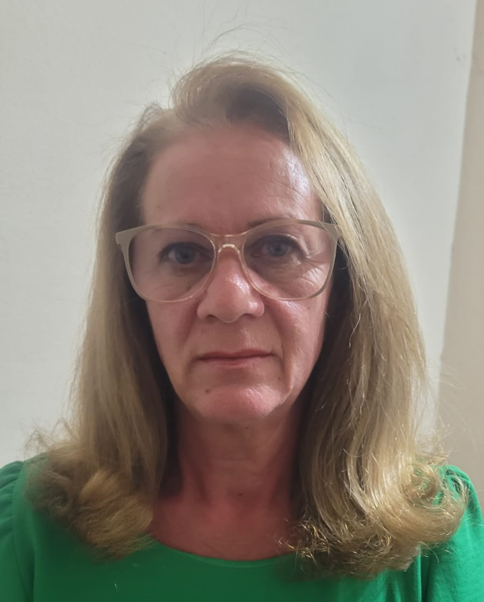

Conheça Márcia
Márcia é uma dona de casa que, aos 42 anos, com seus filhos adolescentes, foi trabalhar fora, depois de 15 anos somente como mãe. Após 8 anos, a empresa em que ela trabalhava mudou de dono e todos os funcionários foram demitidos. Ao passar dois meses, ela estava inquieta por não estar produzindo algo, quando sua família comentou: "Mãe, você sempre fez esfihas pra nós, e são muito saborosas. Por que você não faz e começa a vender?" Pensei um pouco e já comecei a fazer, e hoje já fazem 5 anos que é um sucesso as minhas esfihas. Mas todos os dias me preocupo em me dar o máximo para fazê-las. Sempre quero entregar um produto de qualidade e também feito com muito amor.
Conheça Lucas
Lucas é filho de Márcia. Eu também sou quem criou este site. Tenho 22 anos e faço Engenharia de Software na UTFPR, campus de Cornélio Procópio. Além de estudante, eu também faço snacks para vender junto com a minha mãe. Enquanto ela faz as esfihas, eu faço os doces que você viu na nossa página de produtos. Comecei a fazer esses snacks por necessidade, para arranjar uma renda extra enquanto não consigo um estágio na minha área. Mas confeitaria sempre foi um hobby meu. Caso tenha interesse em comprar algum dos meus doces, é só entrar em contato na página de contatos.